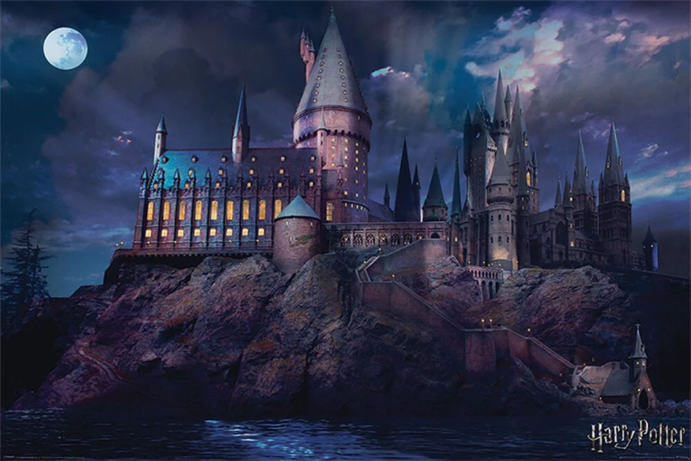
Hogwarts es una de las escuelas de magia más prestigiosas y famosas del mundo. Situada en un castillo encantado, alberga a estudiantes mágicos que son seleccionados en una de sus cuatro casas: Gryffindor, Hufflepuff, Ravenclaw y Slytherin.
Casas de Hogwarts


Profesores de Hogwarts
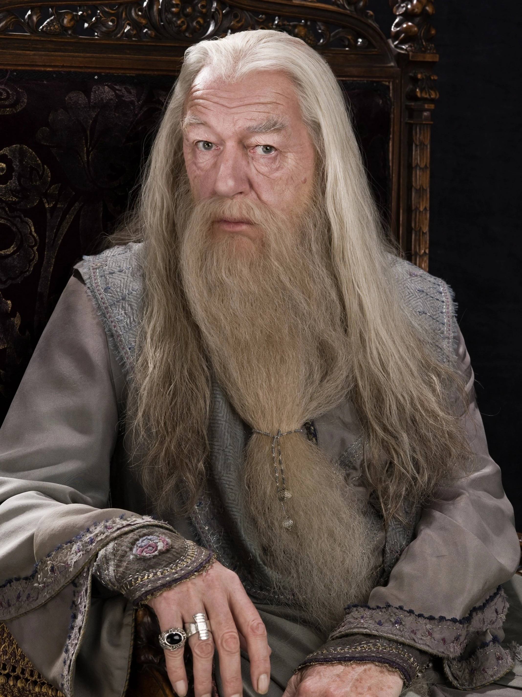
Albus Dumbledore
Materia: Director
Conocido por:
Ser el mago más poderoso de su tiempo.
"La felicidad puede hallarse hasta en los momentos más oscuros, si somos capaces de usar bien la luz."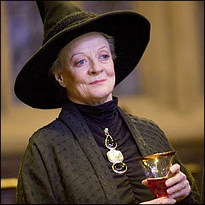
Minerva McGonagall
Materia: Transformaciones
Conocida por:
Su gran disciplina y amor por la justicia.
"La casa de Godric Gryffindor ha tenido el respeto del Mundo Mágico durante casi diez siglos y no consentiré que en el transcurso de una tarde mancilleis ese nombre... por comportarse como un montón de babeantes y bobos babuinos"
Severus Snape
Materia: Pociones
Conocido por:
Su valentía y complejidad como persona.
"Siempre."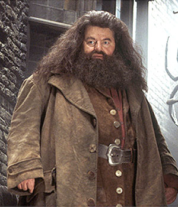
Rubeus Hagrid
Materia: Cuidado de Criaturas Mágicas
Conocido por:
Su amor por las criaturas mágicas.
"No hay lugar más seguro que Hogwarts."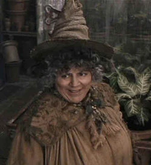
Pomona Sprout
Materia: Herbología
Conocida por:
Su vasto conocimiento sobre plantas mágicas.
"Un toque de Mandrágora puede salvar vidas."
Remus Lupin
Materia: Defensa Contra las Artes Oscuras
Conocido por:
Su bondad y enfoque práctico en la enseñanza.
"Es el miedo a un nombre el que aumenta el miedo a la cosa misma."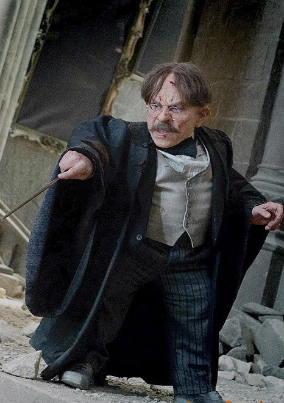
Filius Flitwick
Materia: Hechicería
Conocido por:
Su habilidad excepcional con encantamientos.
"Es Leviosa, no Leviosá."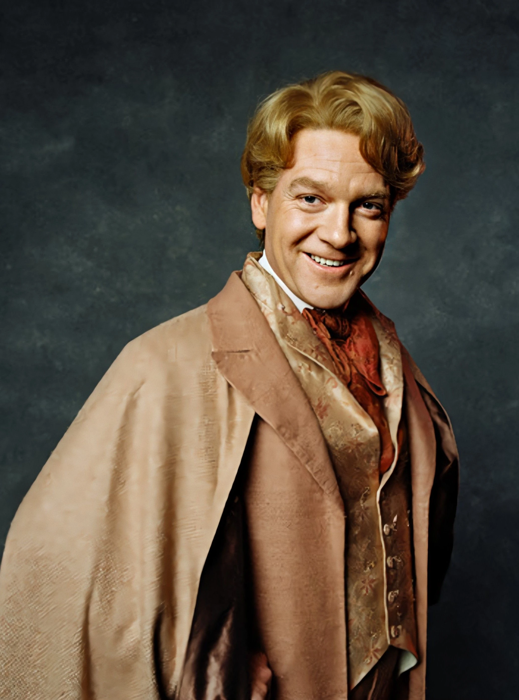
Gilderoy Lockhart
Materia: Defensa Contra las Artes Oscuras
Conocido por:
Su ego desmedido y cuestionables hazañas.
"¡No olviden comprar mis libros!"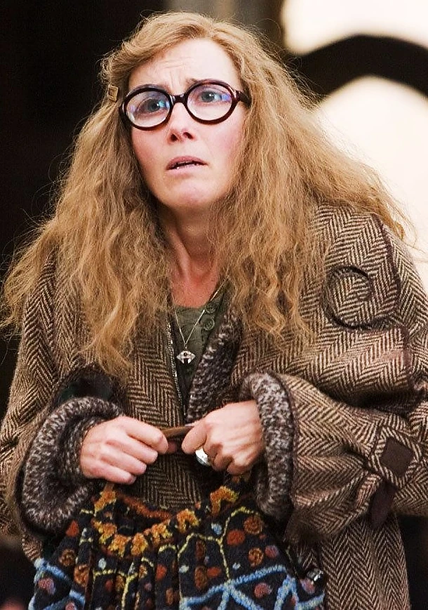
Sybill Trelawney
Materia: Adivinación
Conocida por:
Sus predicciones místicas y a menudo erráticas.
"La próxima luna traerá grandes cambios."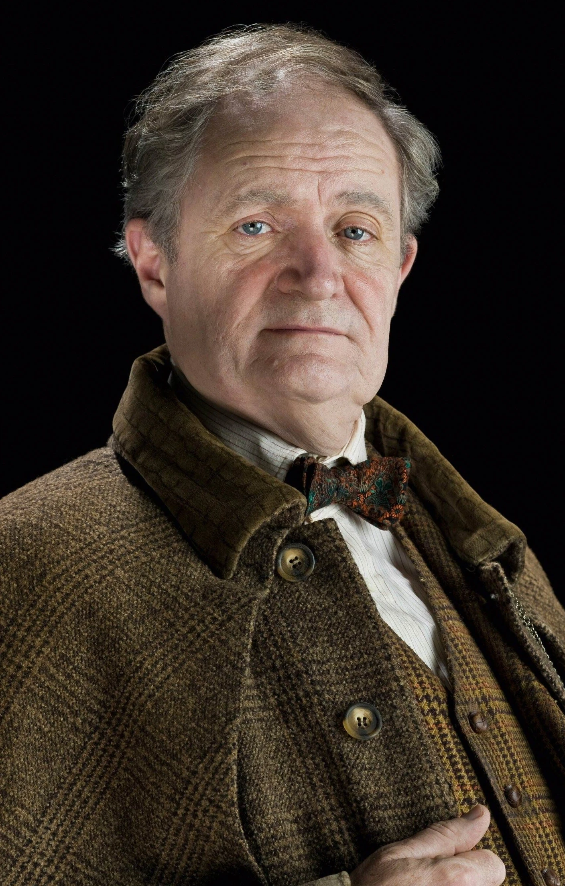
Horace Slughorn
Materia: Pociones
Conocido por:
Su habilidad para formar conexiones estratégicas.
"El éxito radica en rodearse de los mejores."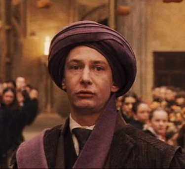
Quirinus Quirrell
Materia: Defensa Contra las Artes Oscuras
Conocido por:
Su frágil carácter y oscuro secreto.
"¡No subestimen a su enemigo!"Dolores Umbridge
Materia: Defensa Contra las Artes Oscuras
Conocida por:
Su obsesión por el orden, su crueldad y su afán de control.
"La autoridad debe ser respetada en todo momento."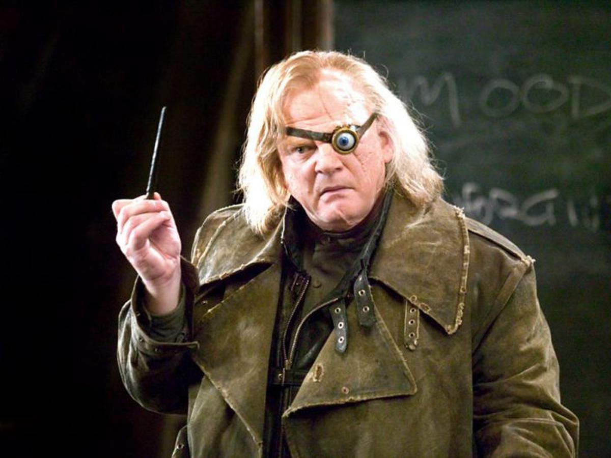
Alastor 'Ojoloco' Moody
Materia: Defensa Contra las Artes Oscuras
Conocido por:
Su paranoia, su experiencia como auror y su famoso ojo mágico.
"¡Constante vigilancia!"